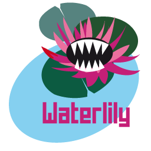
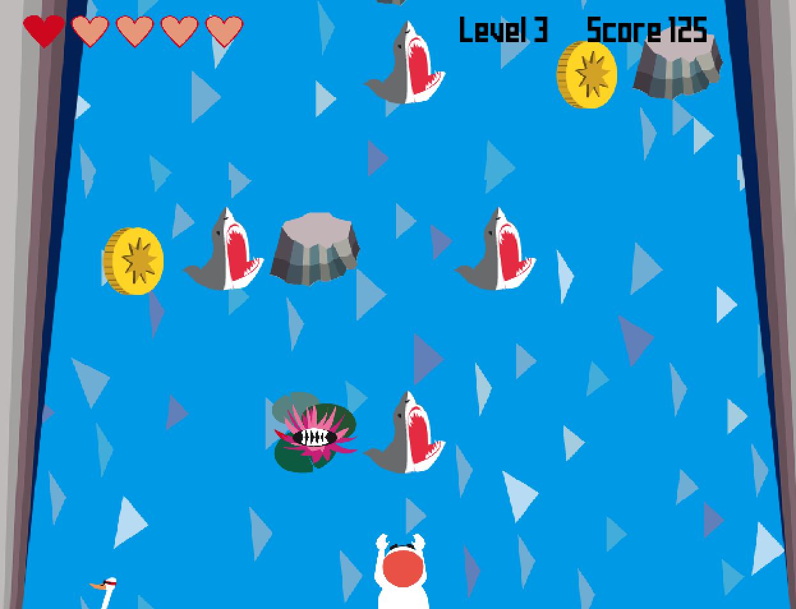
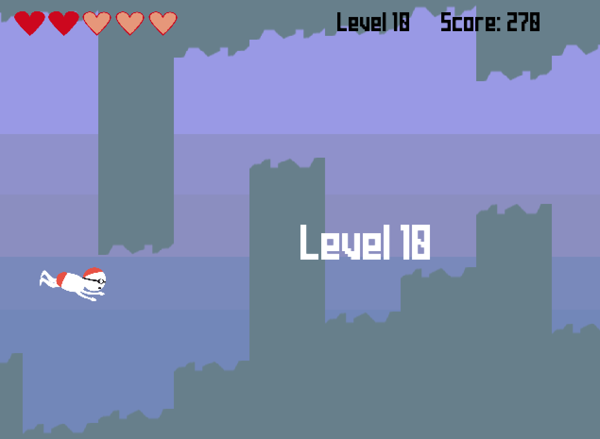

"Waterlily" ist ein Sportspiel zum Thema "schwimmen", entworfen und programmiert im Rahmen des Softwarepraktikums 2015/16 von
Daria Kravets, Konstatin Jaehne, Tilman, Marten Tilgner, Xixuan Zhang, Dong-Hyun Kim, Luise Schricker.
Das Spiel
Als Spieler steuerst du einen Schwimmer, der sich in einem Fluss befindet und Hindernissen ausweichen muss, die mit zunehmender Geschwindigkeit auf dich zu steuern.
Tipp: Nimm dich vor den Rennschwänen in Acht! Du startest mit fünf Leben, die du durch Kollisionen verlierst. Achte auf Herzen, die auf dich zutreiben – du kannst ein Leben regenerieren indem du sie aufsammelst.
Goldmünzen erhöhen deinen Score. Wenn du eine Taucherbrille findest, kannst du den Schwimmer tauchen lassen und hast Zugang zur Unterwasserwelt: hier musst du den Schwimmer durch ein Unterwasserlabyrinth steuern und kannst so den Hindernissen an der Oberfläche ausweichen.
Versuche den Highscore zu knacken und in die Hall of Fame der besten Schwimmer aufgenommen zu werden!
Steuerung
Mit der Leertaste und Escape kannst du das Spiel jederzeit pausieren und zum Hauptmenü zurückwechseln.
Die Welt über Wasser:

Bewege den Schwimmer mit den Pfeiltasten nach rechts und links. Wenn du eine Taucherbrille besitzt, kannst du mit der Pfeiltaste nach unten in den Tauchmodus wechseln.
Die Welt unter Wasser:

Bewege den Schwimmer mit den Pfeiltasten nach oben und nach unten.
Technisches
Benutzt wurde das libGDX framework (libgdx.badlogicgames.com). Hier (TODO: Link einfuegen!) kann die ausführbare jar-Datei heruntergeladen werden. Voraussetzung für die Ausführung der Datei ist eine lauffähige Java-Version (Version 8 – (java.com)).
Ausführung
- Windows/Mac OsX: Doppelklick auf die jar-Datei startet das Spiel
- Linux: Das Spiel kann über die Konsole gestartet werden durch Eingabe von java -jar "Waterlily.jar"
Browserversion
Unter wresr123.github.io kann eine Browserversion von Waterlily online gespielt werden.